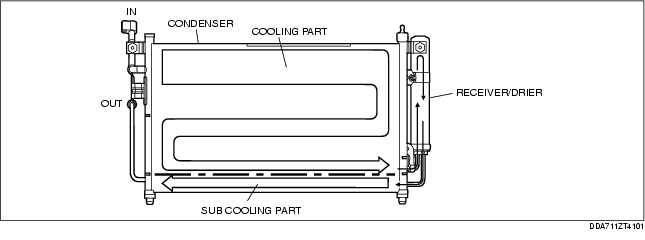

Condenser construction
• A sub cool condenser has been adopted. It is a multi-flow condenser which is equipped with a sub cooling part and integrated with a receiver/drier.
• The sub cool condenser separates liquid-gas refrigerant initially cooled at the condenser via the receiver/drier, where it returns again to the condenser sub cooling part and is cooled, accelerating liquefaction and improving cooling capacity.
